* denotes equal contribution and † denotes equal advising. Below are selected papers. The full publication list is here. Topic-wise selected papers can be found in the research topic page.
2026
ENPIRE: Agentic Robot Policy Self-Improvement in the Real World
arXiv preprint
TL;DR: ENPIRE gives tool-calling coding agents a real-world feedback loop, enabling autonomous policy self-improvement to 99% success on dexterous manipulation tasks.
LUCID: Learning Embodiment-Agnostic Intent Models from Unstructured Human Videos for Scalable Dexterous Robot Skill Acquisition
arXiv preprint
TL;DR: LUCID separates human-video intent from sim-trained control, enabling scalable real-world dexterous manipulation across tasks and embodiments w/o any real robot data.
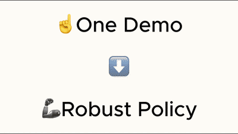
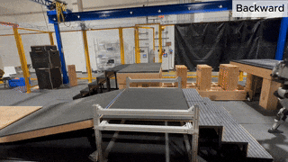

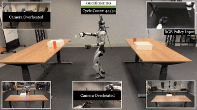
VIRAL: Visual Sim-to-Real at Scale for Humanoid Loco-Manipulation
IEEE / CVF Computer Vision and Pattern Recognition Conference (CVPR), 2026
TL;DR: VIRAL investigates the scaling law of visual sim-to-real and finds a recipe to achieve zero-shot, robust, and continuous real-world deployment.
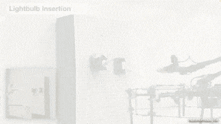
UMI-on-Air: Embodiment-Aware Guidance for Embodiment-Agnostic Visuomotor Policies
International Conference on Robotics and Automation (ICRA), 2026
TL;DR: EADP steers UMI's embodiment-agnostic diffusion policy using the gradient of the low-level controller's tracking cost for cross-embodiment.
OmniRetarget: Interaction-Preserving Data Generation for Humanoid Whole-Body Loco-Manipulation and Scene Interaction
International Conference on Robotics and Automation (ICRA), 2026
(Best Conference Paper Award)
(Best Paper Award on Robot Manipulation and Locomotion)
TL;DR: High-quality interaction-preserving motion reference generation that enables agile whole-body skills with minimal RL tracking.

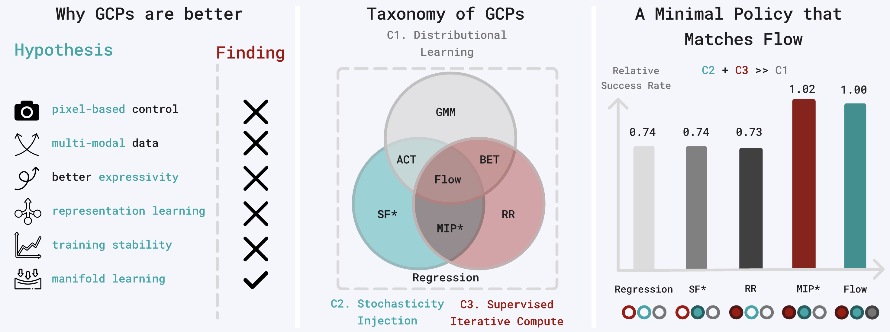

BFM-Zero: A Promptable Behavioral Foundation Model for Humanoid Control Using Unsupervised Reinforcement Learning
International Conference on Learning Representations (ICLR), 2026
TL;DR: BFM-Zero enables zero-shot goal reaching, tracking, and reward optimization (any reward at test time) from one policy.
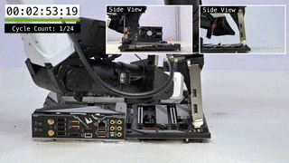
Self-Improving Vision-Language-Action Models with Data Generation via Residual RL
International Conference on Learning Representations (ICLR), 2026
TL;DR: Probe, Learn, Distill (PLD): On-policy probing from a base VLA model + off-policy residual RL + distillation for VLA post-training.
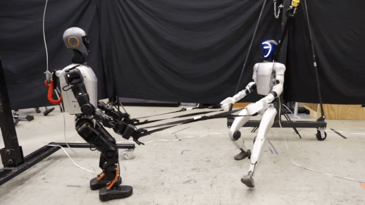
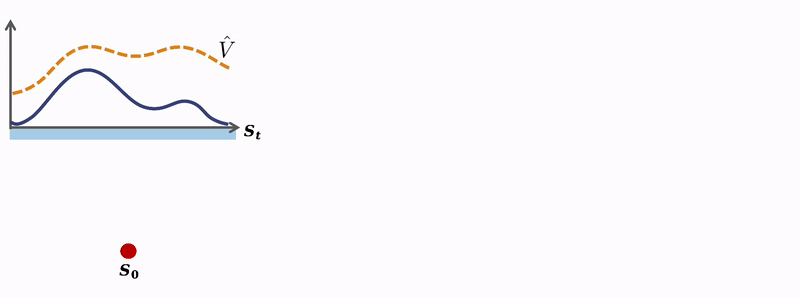
2025
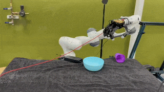
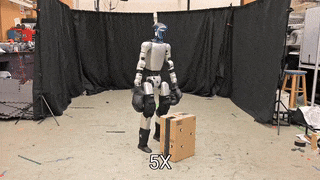
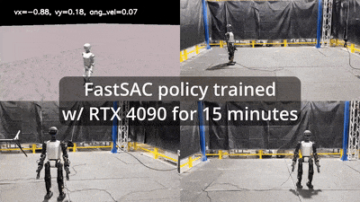

Sampling-Based System Identification with Active Exploration for Legged Robot Sim2Real Learning
Conference on Robot Learning (CoRL), 2025
(Oral Presentation)
TL;DR: SPI-Active is a general system ID tool based on parallel sampling-based optimization and active exploration, for legged sim2real learning.
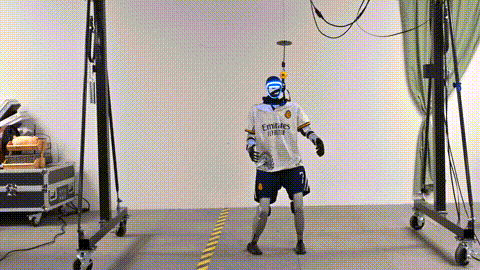

Flying Hand: End-Effector-Centric Framework for Versatile Aerial Manipulation Teleoperation and Policy Learning
Robotics: Science and Systems (RSS), 2025
TL;DR: A general-purpose aerial manipulation framework with an EE-centric interface that bridges whole-body control and policy learning.
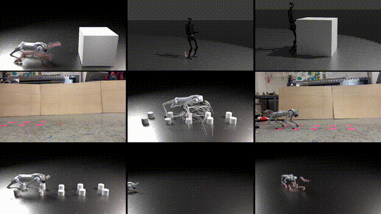
Full-Order Sampling-Based MPC for Torque-Level Locomotion Control via Diffusion-Style Annealing
International Conference on Robotics and Automation (ICRA), 2025
(Best Paper Award Finalist)
TL;DR: DIAL-MPC is the first training-free method achieving real-time whole-body torque control using full-order dynamics.

AnyCar to Anywhere: Learning Universal Dynamics Model for Agile and Adaptive Mobility
International Conference on Robotics and Automation (ICRA), 2025
paper website code IEEE Spectrum
TL;DR: AnyCar is a transformer-based dynamics model that can adapt to various vehicles, environments, state estimators, and tasks.

2024
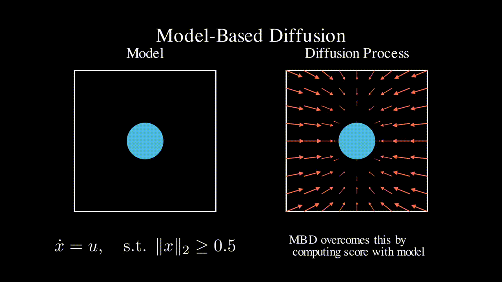

Flying Calligrapher: Contact-Aware Motion and Force Planning and Control for Aerial Manipulation
IEEE Robotics and Automation Letters (RA-L), 2024
TL;DR: Flying calligrapher enables precise hybrid motion and contact force control for an aerial manipulator in various drawing tasks.

OmniH2O: Universal and Dexterous Human-to-Humanoid Whole-Body Teleoperation and Learning
Conference on Robot Learning (CoRL), 2024
paper website dataset code IEEE Spectrum
TL;DR: OmniH2O provides a universal whole-body humanoid control interface that enables diverse teleoperation and autonomy methods.

WoCoCo: Learning Whole-Body Humanoid Control with Sequential Contacts
Conference on Robot Learning (CoRL), 2024
(Oral Presentation)
TL;DR: WoCoCo is a task-agnostic skill learning framework without any motion priors, by decomposing long-horizon tasks into contact sequences.

Learning Human-to-Humanoid Real-Time Whole-Body Teleoperation
International Conference on Intelligent Robots and Systems (IROS), 2024
(Oral Presentation)
paper website code IEEE Spectrum
TL;DR: H2O enables real-time whole-body teleoperation of a full-sized humanoid to perform tasks like pick and place, walking, kicking, boxing, etc.

Agile But Safe: Learning Collision-Free High-Speed Legged Locomotion
Robotics: Science and Systems (RSS), 2024
(Outstanding Student Paper Award Finalist)
paper website code IEEE Spectrum CMU News
TL;DR: ABS enables fully onboard, agile (>3m/s), and collision-free locomotion for quadrupedal robots in cluttered environments.
2023 and Before
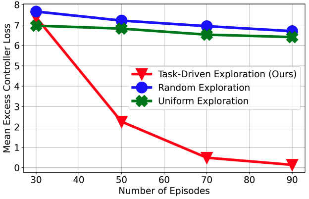
Optimal Exploration for Model-based RL in Nonlinear Systems
Neural Information Processing Systems (NeurIPS), 2023
(Spotlight, 3.1%)
TL;DR: Not all model parameters are equally important. We develop an instance-optimal exploration algorithm for MBRL in nonlinear systems.
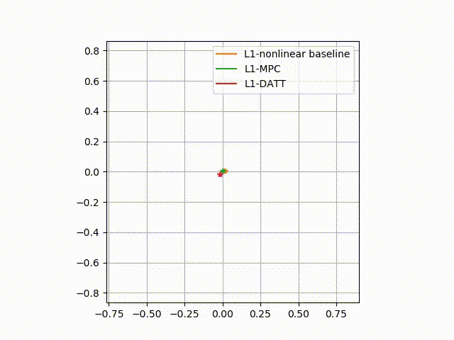

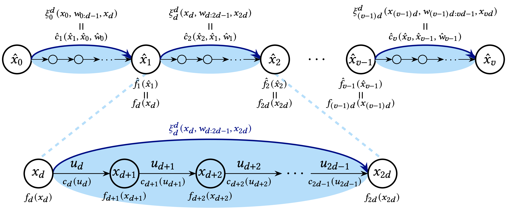
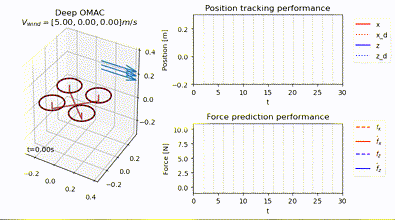
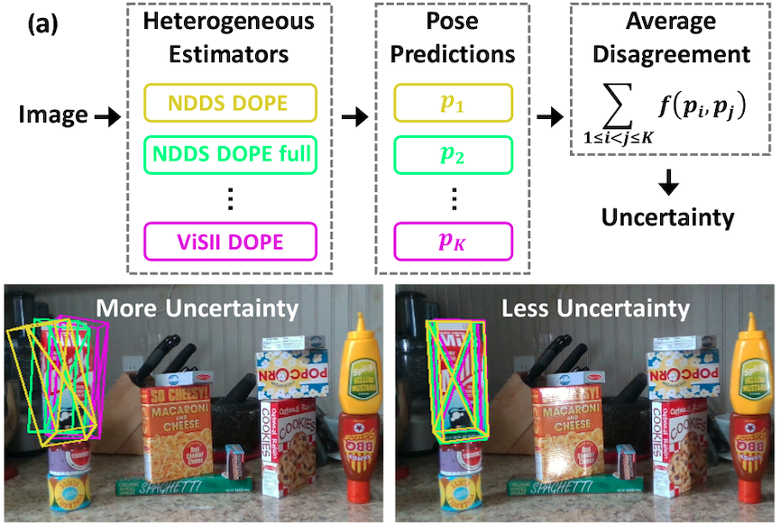

Neural-Swarm2: Planning and Control of Heterogeneous Multirotor Swarms Using Learned Interactions
IEEE Transactions on Robotics
paper video Caltech news Yahoo! news code
TL;DR: Neural-Swarm is a learning-based controller and planner for close-proximity flight of heterogeneous multirotor swarms.

Neural Lander: Stable Drone Landing Control Using Learned Dynamics
International Conference on Robotics and Automation (ICRA), 2019
paper video Caltech homepage news code
TL;DR: Spectrally normalized deep learning and nonlinear control enable provably stable agile drone landing.